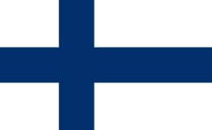

У этого термина существуют и другие значения, см. Финляндия (значения). Финляндская Республика фин. Suomen tasavalta швед. Republiken Finland Флаг Герб Флаг Герб Гимн: «Maamme / Vårt land» «Наш край» Duration: 47 секунд.0:47 Расположение Финляндии (тёмно-зелёный): — в Европе (светло-зелёный и тёмно-серый) — в Европейском союзе (светло-зелёный) Расположение Финляндии (тёмно-зелёный): — в Европе (светло-зелёный и тёмно-серый) — в Европейском союзе (светло-зелёный) Дата независимости 6 декабря 1917 года (от РСФСР) Официальные языки финский, шведский; саамский (региональный) Столица Хельсинки[1] Крупнейшие города Хельсинки, Эспоо, Тампере, Вантаа, Оулу, Турку, Йювяскюля, Коувола Форма правления парламентская республика Государственный строй унитарное государство Президент Александр Стубб Премьер-министр Петтери Орпо Спикер эдускунты Юсси Халла-ахо Гос. религия лютеранство (де-факто)[a] Территория • Всего 338 145[3] км² (66-я в мире) • % водной поверхности 10,15 Население • Оценка (↗5 608 218[4]) 2024 чел. (117-е) • Перепись (2000) 5 180 000 чел. • Плотность 16,5 чел./км² ВВП (ППС) • Итого (2022) 325 млрд[5] долл. (60-й) • На душу населения 58 651[5] долл. (21-й) ВВП (номинал) • Итого (2022) 281 млрд[5] долл. (46-й) • На душу населения 50 655[5] долл. (16-й) ИЧР (2021) ▲ 0,940[6] (очень высокий; 11-е место) Названия жителей финны, финн и финка Валюта евро (EUR, код 978) (до 2002 года — финская марка) Интернет-домены .fi, .ax (для Аландских островов) Код ISO FI Код МОК FIN Телефонный код +358 Часовой пояс EET (UTC+2, летом — UTC+3) Автомобильное движение справа Логотип Викисклада Медиафайлы на Викискладе Финляндия (снимки из космоса летом слева и зимой справа) Финляндия на средневековой карте Финля́ндия (фин. Suomi МФА: [ˈsuo̯mi]о файле, швед. Finland МФА: [ˈfɪ̌nland]о файле), официальное название — Финля́ндская Респу́блика (фин. Suomen tasavalta, швед. Republiken Finland[7]; произношение на обоих языкахо файле) — государство в Северной Европе на восточном побережье Балтийского моря. На востоке граничит с Россией, на севере с Норвегией, на западе со Швецией. На юге ближайшим соседом является Эстония к югу от Финского залива. Столица и крупнейший город Финляндии — Хельсинки. Финляндия, по состоянию на 1 марта 2023 года, — относительно малонаселённая страна с населением в 5 568 637 человек[8], сосредоточенным в основном в южных и центральных частях страны. Конституция Финляндии определяет финский и шведский языки как национальные языки. В конце 2022 года говорящие на финском языке составляли 85,9 % населения (4 778 891 чел.), говорящие на шведском языке — 5,2 % населения (287 052 чел.), а говорящие на саамских языках — 0,04 % населения (2 035 чел.)[9]. Говорящие на других языках составляли 8,9 % (495 992 чел.) населения[9]. Парламентская республика. С 1 марта 2024 года пост занимает Александр Стубб, победивший на президентских выборах 2024 года. С 6 декабря 1917 года является независимым государством (в 2017 году отмечалось 100-летие независимости страны). Финляндия является членом Северного паспортного союза (с 1952), Организации Объединённых Наций (с 1955), Северного совета (с 1956), Европейского союза (с 1995), Шенгенского соглашения (с 1996) и НАТО (с 2023). Во «Всемирном докладе о счастье 2018», опубликованном ООН, Финляндия заняла первое место[10]. В последующие четыре года Финляндия также была признана самой счастливой страной в мире[11]. В 2010 году страна была на первом месте в списке «Лучшие страны мира» (англ. The world's best countries) по версии журнала Newsweek[12], а также является третьей в рейтинге равноправия полов[13]. С 2011 по 2014 годы американский фонд «Fund for Peace» оценивал Финляндию как «самую стабильную страну мира»[14][15].
Флаг Финляндии и видео с её красотами:
